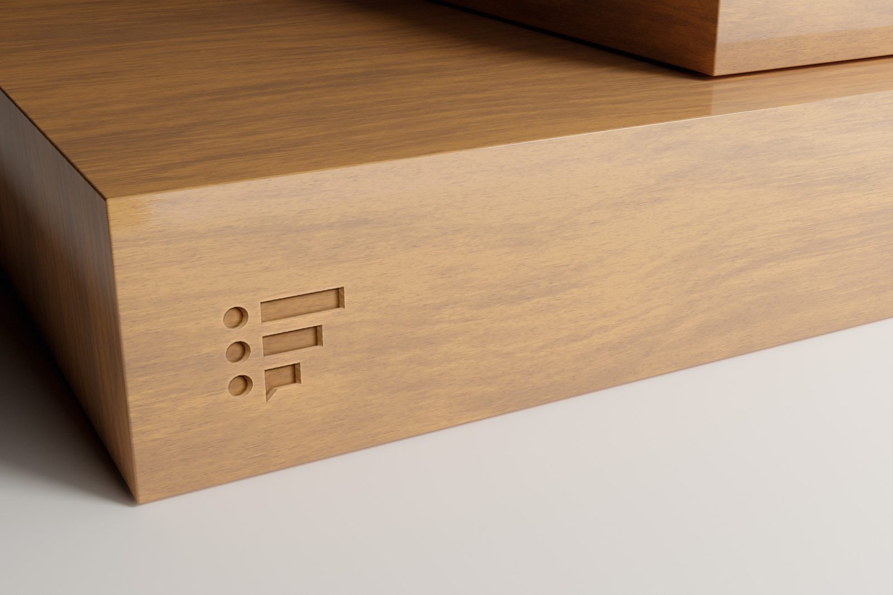
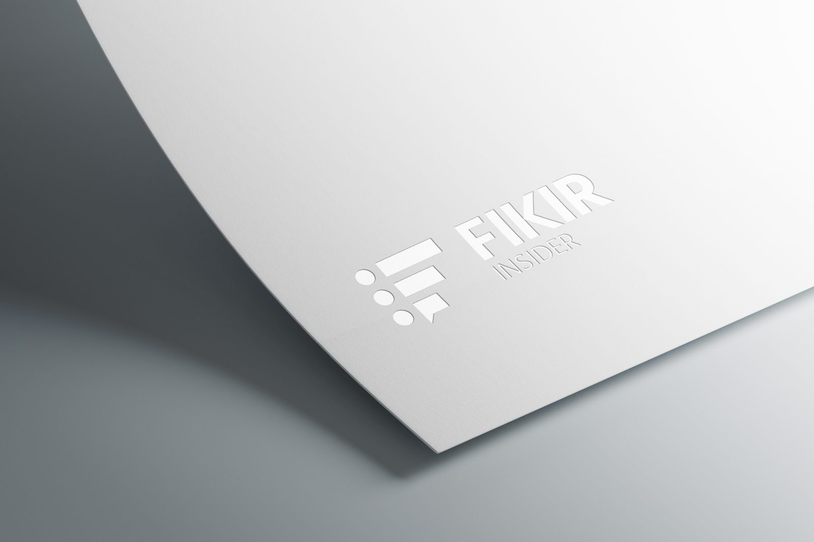

Fikir Insider
Logo and brand identity by Basata, 2024
- Client
- Fikir Insider
- Year
- 2024
- Scope
- Logo, Identity System
- Sector
- Research · Public opinion
Identity for Fikir Insider, a research firm.


Logo and brand identity by Basata, 2024
Identity for Fikir Insider, a research firm.

